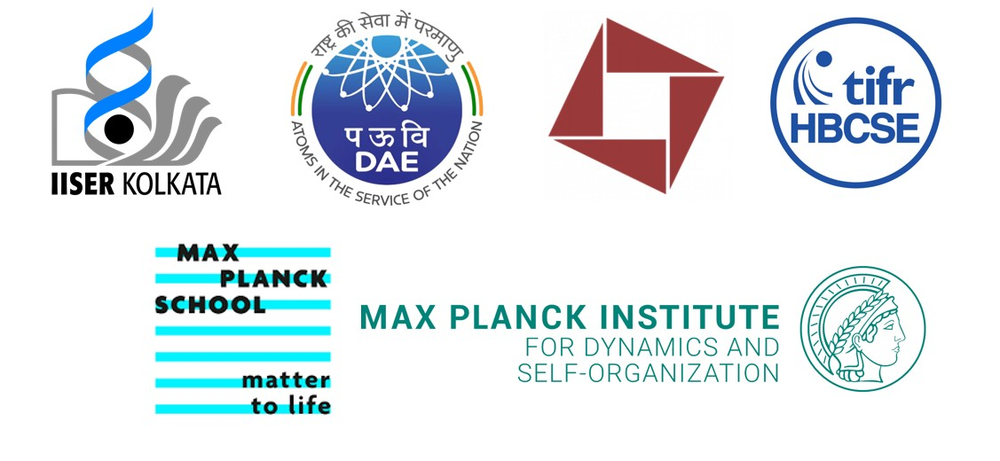

My research interest spans both equilibrium and non-equilibrium statistical physics. In this page I have given a brief description of the projects that are of my current or previous interest. Most of them are guided by supervisor, although a few are independent projects where I would be happy to collaborate! In that case please email me at bikram25052005[at]gmail[dot]com.
Phase transitions and entropy-driven ordering in lattice systems of hard rods.
Critical behaviour of percolation transitions on correlated random landscapes.
Scaling behaviour and dynamics of turbulence in Voigt-regularized models.
Transport, fluctuations, and disorder effects in complex electrical networks.
Critical behaviour and universality in correlated disordered systems.
Activity fields, spatial correlations, and multifractality in self-organized critical systems.
Some of the works above were carried out during my term at ICTS-TIFR as an NIUS scholar and I acknowlegde NIUS program of HBCSE-TIFR funded by the Department of Atomic Energy, Govt. of India (Project No. RTI4001).
